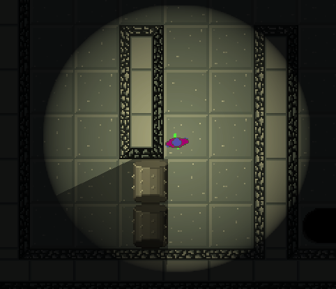
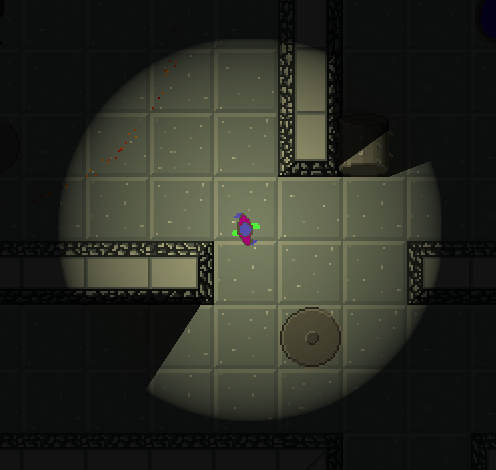
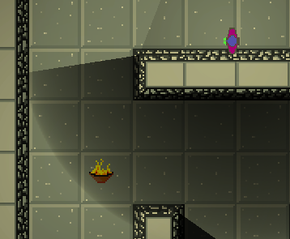
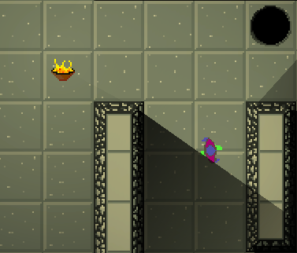
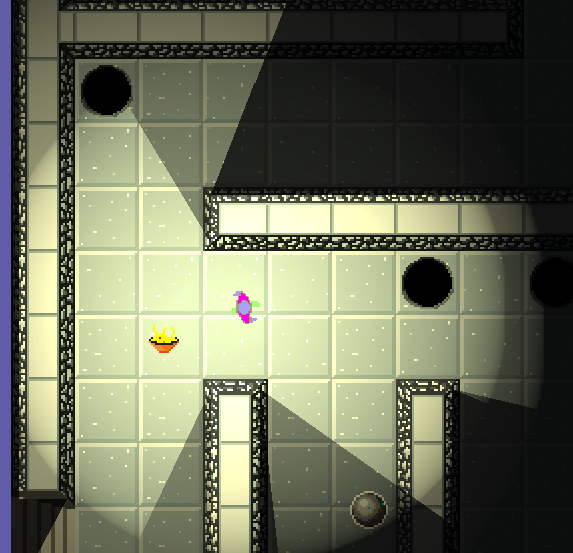

May 9, 2021
Converted these journal entries into html for the github page. Will soon stop writing journal entries here (google docs) and write directly to the website (which is part of the whole project on github anyway). Added a rudimentary Inventory screen. The goal will to have a backpack where the player can assign special powers to the item hotkeys on the gamescreen. Game does not pause while backpack is open, so the player will have to keep their device stable while managing their hotkeys - this is to give the player the flexibility to swap powers mid level, but at the cost of needing to find a stable/safe spot to stop (unlike, say, Skyrim - where you can eat 99 cheese wheels in an instant, pause the game to regroup, etc). I don’t know what the “correct” number of quickslots is - maybe 2 or 3? I feel that more would crowd the screen.
May 8, 2021
Gates and Keys are now working correctly and can be placed as tiles. Gate does not block light. Also, shadows for marbles and monsters are sometimes on top of the sprite and sometimes not? Getting lights to produce correct shadows via the URP is going to take a lot of troubleshooting (not to mention it’s still an experimental feature of the URP). May have to remove it from the final game until a stable solution is found. Realtime shadows is really, really cool though…
Monsters. I need to design and implement several creepy crawlies. Right now, I only have the Mummy, which just follows the player upon waking (for no damage, but can push them into a pit or marbles, etc) but still needs art/animations. I guess the Guardian exists as well, but needs some tweaks. From the object type sheet, the basic monster is composed of the following types:
- Movement
- Immobile (these are traps)
- Stationary (can be moved)
- Follow Player
- Dumb Follow - straight line vector to player
- Smart Follow - A* to pathfind
- Patrol - move along track/trail
- Behavior
- Sleepy - stationary when asleep, moves when awake
- Fearful - if player enters certain radius, move away from player
- Attack - each character can have one attack of each type
- Range
- Touch Attack - deal damage upon direct collision
- Melee Attack - deal damage to creature after entering the melee trigger
- Ranged Attack
- Damage Type
I’ve done a little work for the A* (just added a package and implemented it, needs further work to work smoothly with my game’s movement handling). So the most sensible path would be to fully implement the Smart Follow, add a Range attack, and implement fire damage.
May 7, 2021
Added new sprites and animations, gradually replacing game pieces with something approaching final art. Health bar hearts are now custom and have animations. Need to develop a set of intro/starter levels for playtesting. Sound design needs some serious consideration. I think the 16-bit SNES era sounds are more what I’m going for, as actual 8-bit music can be pretty harsh today, especially if played on mobile device speakers. I have a slight desire to make all the sounds myself, but it’ll probably be much more time efficient to work with a royalty free sample pack and add processing to taste.
Getting into the flow of making art assets and animations. Need to look into lightly automated processes of some kind, as it’s pretty tedious at the moment:
- Make art in ProMotion NG projects
- Export animations as a PNG sprite sheet with Nx1 rows (N = frame count)
- Import spritesheet into Unity (can export directly into /assests/art/whatever)
- Apply sprite preset in Unity editor (PPU 32, no compression, no filter)
- Edit sprite sheet, slice by grid
- Add to new animations, etc.
I haven’t looked into ProMotionNG plugins yet, but that may be helpful. Same with animation tools for Unity. Yeah, probably time to look for tools to help, because it’s pretty tedious and I’m bound to screw something up at some point.
May 6, 2021
The performance dip between normal light and shadowy conditions is quite a lot, so there’s some tuning to do. I’ve been watching Unity dev talks and absorbing some information. By tweaking the URP (Universal Render Pipeline) settings, I was able to get a significant performance gain. I forgot to record stats pre tweaks, but I’m currently getting 60-70fps (with a 60fps target) now, even in the more intense shadow sections with many moving objects casting realtime shadows.
I used the following 2part video for some tips https://youtu.be/ZRDHEqy2uPI as well as the mobile focused video https://youtu.be/ogaWex7HzaA.
Changes I found Useful
- Project -> Player settings
- Multithreaded Rendering off (need to dig deeper into why this is helpful for mobile)
- Project -> Quality
- URP
- reduced shadow resolution from default () to 256 (lowest) - this creates shadows more befitting an ‘old school’ 8bit(ish) look, and resulted in a pretty huge feeling performance boost
- Animations
- cache Animator.StringToHash(string) for animator calls - for simplicity, I had been using strings in the animator.play, but a few of these were actually being called in Update, so the strings were hashed every Update cycle. using stored hashes for all animator calls is much more performative
- UI
- removed “raycast target” from all UI elements that are not interactable. did not notice performance change, but this is the best practice (as all possible raycast targets are considered for a raycast)
- Mark objects that don’t move as static in Inspector (works well for tile maps)
- collisions propagate up hierarchies, so be aware of how you create hierarchies
Today, I also tweaked the character spawning system. Added an optional spawn animation, as well as a virtual AfterSpawn() function for adding effects such as an impulse force, light it on fire, etc.
Apr 26, 2021
Added a framerate limiter to 60fps. Noticed in testing sometimes the fps was going into the high hundreds, which is completely unnecessary. I’ll have to toy around with the right setting in relationship to the target animation framerate. Right now, everything is 12 fps on 1’s, but I may move this to 24fps on 2’s (with some exceptions for hard impact animations). Anyway, the 60fps target does noticeably improve performance, which is nice.
Toying around with shadows again. Running around dark mazes and lighting up rooms with magic as you go is fun, but looks very strange when the player’s torch doesn’t cast any shadows. It’s like there’s a spotlight from above the board instead of in the world. There’s an experimental bit in the Universal Render Pipeline called Shadow Caster 2D, but the package is only designed for GameObjects, not tiles. Getting it setup to cast shadows on traps, monsters, etc is fine, but I’ll need to add some code to make it work with tilesets and composite colliders.

Here we can see that the shadows are correctly cast on the rollers, but the walls are not. After digging into the Shadow Caster code and searching the unity forums, I found a post by ThundThund which has script for creating shadow caster objects for each section of the composite tilemaps.

This is a much better result after fiddling with the light intensity and shadow intensity of the lighting. For the dark levels, I’m using light intensity 0.1 for the global light, 1.0 for the player torch, and 0.9 for the player torch shadow intensity - this matches the shadow intensity to the ambient 0.1 light, which is good enough for now. Using ThundThund’s script is an editor tool, not a real-time tool, so I’ll need to manually activate the tool for each dark level (which is absolutely fine, for now). I’ll figure out a way to run it in real time for the procedural level generation (which I haven’t started on).
After some trial and error with the URP lighting settings, found some strange lighting effects when multiple light sources overlap.

Alpha Overlap: true; torch order 0, player order 1

Alpha Overlap: true; torch order 1, player order 0

Alpha Overlap: false
The default additive light blending seems to be what I’m looking for, but it will take tweaking of the intensity, color, and fall-off settings to improve the overall look. Also, I’m unsure about the global light settings for dark levels - intensity = 0.1, 0.05, or 0? Most games that I can think of that use a flashlight/torch have some level of ambient light.
Art style. So far, all of the assets, except for the Player, have been drawn with shadows/shading assuming light coming from the top left. However, I think it will be better to switch to a flat color style, which is more cartoony, and befitting the era and graphical fidelity. Will also make the lighting effects make more visual sense, as a torch should light evenly. Also, I need to try out making normal maps some some objects to create more dimensional lighting effects.
Apr 23, 2021
Been thinking more about the types of powers, collections, rewards, tools, and general tone of the world.
- Rewards
- End of Level - standard victory animation
- End of Stage (collection of levels) - unique victory animation for each stage
- return to village with collectables
- End of Game - unique victory animation
- Powers/Tools
- Transmute - turn into a random enemy
- Leap/Float - move over pits/water/fire for a short duration
- Freeze Time - freeze all other characters in place for a short duration, player can still fall into pits, but do not take damage during the time freeze
- Shield - create a 360deg barrier
- Collections - items/pickups in levels
- herbs/mushrooms (based on tileset)
- scrolls/books - lost or stolen knowledge
The life/death/respawn system needs some work. Giving the player unlimited attempts is important to me, but I want it to feel just a little bad, but not too sad or violent. Having the player cast an anchor spell at the entrance to each room/level would make the entrance into a new level have a unique feel (instead of just repeating the same entrance animation each time). When the player dies, I’d like to see glowing particles twinkle into existence where the death occurred and whimsically float back to the spawn point, where the anchor spell will reconstruct the player like a teleporter.
Also, I’m on a documenting kick. Getting together a simple website for the development process using Github pages for hosting (they offer free static pages, which is insane value).
Mar 4th, 2021
There are lots of possibilities for unique movement effects and defensive moves. I want to center this as a mobile game, so the controls and usable screen space are quite limited. Having one or two icons to tap for abilities would add a lot to gameplay without making So, unlike my original conception, I will be adding a backpack and equipment system. A backpack icon can lead to a floating inventory screen if I want the player to access their backpack at any time, but I may restrict to between levels or stages
Feb 23rd, 2021
Made some headway in the past couple weeks. There is now a rudimentary worldmap for the user to click on, with location summary and play/resume, reset, and return to map options. Finishing the first location and having the world map open feels like a proper adventure. Revealing the paths and locations like in super mario world seems like a good option.
Currently working on pathfinding. I may eventually write my own A* along with the randomly generated levels, eventually, but for now I’m using the free version of Aron Granberg’s A* project (https://www.arongranberg.com/astar/freevspro). His package is performant, and has a $100 pro license that allows for multithreading and other optimizations, which is nice. Getting it set up to move a dork around to different waypoints was very easy.
Some of the monsters, such as sentries with patrols, will not be affected by board movement, but the majority of them will. It will be a challenge to balance the feel of player control over the monsters via the board vs their own locomotion.
Procedural Generation
Levels can be constructed as a 2d grid of tile identifiers, with a database of tiles/objects. There are composite colliders for both the Walls and Pits tilemaps, so there will be at least three different layers that will need to be populated. To save the map data, each tile will need position and layer data. Probably going to use JSON, but a level file may look like:
Feb 10th, 2021
Level system has been updated. Need to get on producing art and animation assets for the game. It’s almost ready/stable to give to people for initial testing.
Feb 2nd, 2021
Main Menu should read: {Resume Game} , [New Game], …. pressing New Game shall automatically wipe current game data, removing need for a separate “clear” button on the current game data panel.
For now, there shall be only one map. The map is just like an ordinary level, but uses a different UI.
New Game Sequence:
- Press New Game on Main Menu
- Clear all save data
- Load Starting Location
- load location’s first level
- Play rooms until location is complete
- Player selects a new location, go to (4)
- If no locations remain, continue
- End Game Stuff
Save games must store:
- current location
- location
- id of current LevelSpecs (name, scene location, etc)
- current player stats
- current/max health
Jan 22nd, 2021
Level management is being overhauled to use a unique string key for each level, to facilitate skipping between levels. I’d also like to add a world map with nodes to explore, each node having a collection of levels. For the initial release, I’ll use a single primary map with one or more discoverable maps.
- Map - collection of Locations
- Location - collection of Levels
- Level - a playable board with one or more entrances and exits
- Sublevels - secret portions of levels
Each Level will have a primary string key of form:
[Map Name]_[Location Name]_[Level: 000-999]{_SubLevel: A}
For example:
- Main_Intro_000
- Main_Castle_021_A
- Caverns_Burrows_002
Currently, a single Unity scene represents one level (Also for consideration: creating the tilemap from a stream and spawning objects as needed all in a single scene. would be useful for user generated maps. For a game of this scope, it would probably render quickly, even for a large board with lighting effects, lots of objects, and a nav mesh, especially if I lean into the tilemap system). I’ll be storing the scenes in nested folders,for sanity, so a simple key/value system for retrieving the scene name by its id field for loading.
Jan 14th, 2021
I’ve begun redesigning the base UI system to use a dictionary with enum keys for the various menus, instead of making a static Open() call, which (for some reason) was behaving inconsistently. It’s annoying to add to the enum list, but this is a marble rolling game, there just won’t be that many menus. It’s fine. Probably.
Dec 6th, 2020
Sound design and music - need to start making some samples and demo materials. Will be using 8/16-bit era sounds in stereo, probably all synths and samples.
Sound Events:
- Collisions -
- Character and Character
- Character and Wall
- Character and Trap
- Character Sounds
- Attacks
- Getting Damaged
- Going to sleep
- Awakening
- Spawning
- Dying
Dec 2nd, 2020
Finally got the healthbar to operate correctly, as well as the items/inventory/inventoryUI - when the player dies, the inventory is cleared, health is returned to baseline, and items are repopulated to the board.
Items and monsters are to be placed as objects, while terrain, traps, doors, and spawnpoints are tiles on the tilemaps. For an initial release, I can build the levels directly in unity. Meanwhile, I will investigate building a level editor, both in-app and web based. Once I have an editor, I can update the game and allow for user-generated content. After that, I can work on a level generator (probably going the Spelunky route of a mix of hand-crafted set pieces with randomized tiles) for a rougelike version.
In an effort to further undermine capitalism, I want to move away from the treasure collection and move it to cataloguing specimens, taking rubings of writings, or some other non-extractive collection for marking player advancement. Possible themes to explore:
- Scholar
- Retrieving missing pages, scrolls, and books
- Sketch
- Scientist
- Collect eggs, spores, biological samples
- Collect mineral samples, gems
- Wizard/Acolyte
- could be a blend of Scholar and Scientist
Nov 26th, 2020
The first time a level/floor is loaded, camera should start focused on the exit and then smoothly pan to the starting position where it is then focused on the player. Establish the goal and then orient the player toward that goal.
Nov 6th, 2020
Health system needs a little bit of a tweak, mostly the UI. What is the Unity method for animating UI elements? Animators and sprites? Or directly manipulating the sprites of image components?
Oct 28th, 2020
Scriptable objects are great! At least, for some things. Used them for keys: one scriptable object per key type. Just storing the key type and the UI sprite. Inventory as a list of references to scriptable objects is a lot more lightweight.
Keys will stick around in your inventory and not be consumed by gates. When a complete set of keys has been collected, they shall combine into a skeleton key.
Initial design resets all items on a level upon death.
Currently researching scripting for the Tilemap. I’d like to paint a map with gates and destructible terrain that calls for an update of the surrounding tiles so the rule tiles are always presenting the most aesthetically pleasing tile for a given situation.
Oct 26th, 2020
Decided to start keeping design notes here, instead of… scattered everywhere?
Control for player feels best when friction and force are identical to marbles and rollers. When friction is added to player, it feels unresponsive and “floaty”. Could be fun to have a game effect that made some/all characters feel that way - perhaps the poisoned effect could cause this frictive/floaty effect.
Experimented with individual movement control for characters, but handling it once per FixedUpdate in the GameController performs much better.
Need to refactor Move and Attack to be interfaces, to extend those to objects/traps/terrain.
Currently looking into Unity’s scriptable objects as an alternative to a database for character stats. Either way, I would like to shrink the size of the characters, and moving base stats off of character sheets to a central place is my goal. Better nomenclature may be Stats - CurrentStats (attached to character object) and BaseStats (in central repository).
Falling into pits when kicked by a Blade Trap at great speed feels bad when you graze the edge of the pit. Should experiment with multiple triggers (inner and outer, only kill if both triggers true), converting trigger to “OnTriggerStay” and trying different periods, and checking for object speed (only falls into pit under a certain speed - including marbles/monsters/etc)